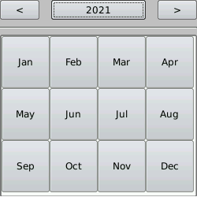
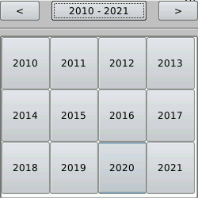

Um den einzustellenden Tag auszuwählen, drücken Sie einfach auf den gewünschten Tag.

Mit den Pfeilen am oberen Rand des Kalenders kann man in den Monaten vorwärts oder rückwärts gehen, oder man drückt die Taste mit dem aktuellen Monat, um alle Monate des Jahres zu sehen.

Um das Jahr zu ändern, können Sie mit den Pfeilen vorwärts oder rükwärts gehen oder die Taste mit dem aktuellen Jahr drücken und das gewünschte Jahr auswählen.
